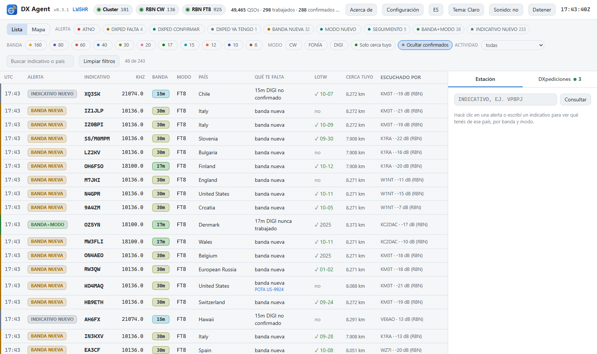
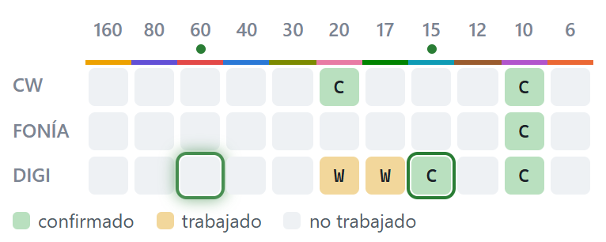
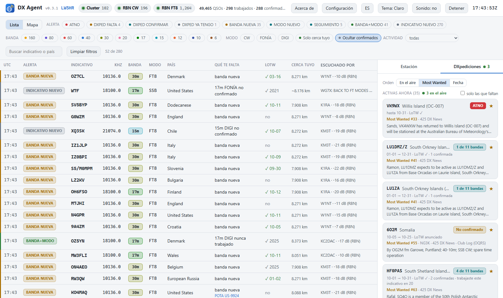
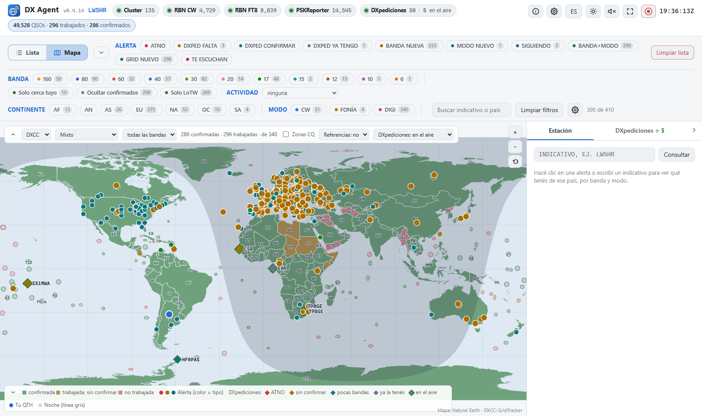

DX Agent
Vigila el DX cluster y el Reverse Beacon Network, compara cada spot con tu log y te avisa en el momento en que está en el aire una estación que te falta: un país nuevo, una banda o un modo nuevo, una DXpedición que suma algo, un parque o una cumbre que no trabajaste.
Windows, Linux y macOS. No hay que instalar nada: cada paquete trae su propio Python. Gratis y open source (MIT).
Qué te avisa
- ATNO, banda nueva, modo nuevo Avisa solo cuando trabajar esa estación suma algo de verdad: el país nunca trabajado, la banda o el modo que te falta, o una combinación que no tenés.
- DXpediciones que valen la pena Las DXpediciones anunciadas en NG3K, 425 DX News y Club Log, cada una diciendo si te suma una entidad, una banda o un modo, y si ya estás en su log online.
- Tu watchlist y tus estaciones Indicativos que siempre querés escuchar, con comodines, y los indicativos exactos que estás persiguiendo.
- POTA, SOTA, IOTA, WWFF Cumbres, parques e islas, marcadas como nuevas cuando no las trabajaste en esa banda.
- Cerca tuyo Si la estación está siendo escuchada por receptores cerca de tu estación, para saber si el camino está abierto para vos.
- Un clic a la radio Sintonizá el spot desde el panel: Log4OM, N1MM, DXLog.net, OmniRig, Hamlib, flrig, DXLab, WSJT-X o TCI (una FlexRadio con AetherSDR, con las alertas en su panadaptador; en prueba).
Pantallas




Funciona con lo que ya usás
Lee el archivo ADIF de cualquier programa de log — WSJT-X, Log4OM, N1MM Logger+, DXLog.net, Ham Radio Deluxe, DXLab… — y tus confirmaciones de LoTW. Un QSO que acabás de guardar se tiene en cuenta en segundos: directo de la base de Log4OM 2, o por UDP desde N1MM, DXLog.net, Log4OM y WSJT-X. Tus datos y tu configuración quedan en tu computadora.
Solo biblioteca estándar de Python 3.11+: sin cuentas, sin nube, sin telemetría.
Instalar
- Bajá la última versión desde la página de releases.
- Windows: descomprimí
dx-agent-<versión>-windows.zipy hacé doble clic enstart-dx-agent.bat.
Linux (x86_64): descomprimídx-agent-<versión>-linux-x86_64.tar.gzy ejecutá./start-dx-agent.sh.
Mac: descomprimídx-agent-<versión>-macos.tar.gzy hacé doble clic enstart-dx-agent.command. - El panel se abre en el navegador en
http://localhost:8073. Entrá a Configuración y poné tu indicativo y la ruta de tu log ADIF.
Preguntas
¿Hay que instalar Python?
No. Cada paquete trae su propio Python: se descomprime y se arranca. No hay nada más que instalar.
¿Usa mis confirmaciones de LoTW?
Sí. Con tu contraseña de LoTW baja tus confirmaciones y las suma a tu log, así una entidad cuenta como confirmada aunque tu programa de log todavía no la haya sincronizado. También podés usar lo que subiste a LoTW como log, sin archivo ADIF.
¿Con qué programas de log funciona?
Con cualquiera que escriba un archivo ADIF. Con Log4OM 2 un QSO se lee directo de su base en unos 10 segundos; los QSOs que N1MM Logger+, DXLog.net, Log4OM o WSJT-X mandan por UDP cuentan al instante.
¿Qué son el DX cluster y el RBN?
El DX cluster es donde los radioaficionados anuncian las estaciones que escuchan. El Reverse Beacon Network es una red mundial de receptores automáticos que decodifican CW y modos digitales y reportan cada estación que oyen. DX Agent escucha a los dos y se queda con lo que importa para tu log.
¿Y en Windows, Linux o Mac?
En los tres, cada uno con su paquete. Lo único que no está fuera de Windows es el log en vivo de Log4OM y los destinos de sintonía Log4OM, N1MM, OmniRig y DXLab; Hamlib, flrig y TCI funcionan en todas las plataformas.
¿Es gratis de verdad?
Sí: licencia MIT, sin cuenta, sin telemetría y sin servicio en la nube. Corre en tu computadora.
Más
- Manual de uso — instalación, primera configuración, la pantalla, las alertas, sintonizar la radio, tu programa de log, DXpediciones, POTA/SOTA, el mapa, el CQ DX Marathon, LoTW.
- Documentación técnica — cada ajuste y cómo funciona por dentro.
- Todas las versiones, con lo que cambió en cada una.
- Problemas o ideas: issues.
- In English: English page · manual.